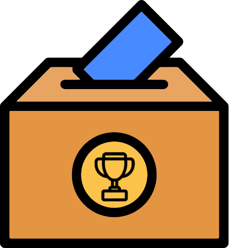

| Wednesday, Oct 16 |
16:40 - 18:00 |
ACM UIST 2024 Closing Keynote: Test of Time Award
Gestures without libraries, toolkits or training: a $1 recognizer for user interface prototypes.
by Wobbrock, Jacob O., Andrew D. Wilson, and Yang Li in Proceedings of the 20th annual ACM symposium on User interface software and technology. 2007.
- The keynote will take place at the ACM UIST 2024 conference venue.
|
|
18:00 - 19:00 |
AAAI HCOMP 2024 Opening Reception |
|
| Thursday, Oct 17 |
09:00 - 09:30 |
Welcome Session |
|
09:30 - 11:00 |
Keynote: Vivek Seshadri |
|
11:00 - 11:30 |
Coffee Break |
|
|
11:30 - 13:00 |
Paper Session 1: Human Computation, Microtask Crowdsourcing, and Privacy
(Click to Expand)
-
An Exploratory Study of the Impact of Tasks Selection Strategies on Worker Performance in Crowdsourcing Microtasks
- Huda Banuqitah, Mark Dunlop, Maysoon Abulkhair and Sotirios Terzis
-
Unveiling the Inter-Related Preferences of Crowdworkers: Implications for Personalized and Flexible Platform Design
- Senjuti Dutta, Rhema Linder, Alex Williams, Anastasia Kuzminykh and Scott Ruoti
-
Combining Human and AI Strengths in Object Counting under Information Asymmetry
- Songyu Liu and Mark Steyvers
-
Toward Context-aware Privacy Enhancing Technologies for Online Self-disclosure
- Tingting Du, Jiyoon Kim, Anna Squicciarini and Sarah Rajtmajer
|
|
13:00 - 14:30 |
Lunch Break |
|
14:30 - 16:15 |
Paper Session 2: Humans and Large Language Models
(Click to Expand)
-
Disclosures & Disclaimers: Investigating the Impact of Transparency Disclosures and Reliability Disclaimers on Learner-LLM Interactions
- Jessica Bo, Harsh Kumar, Michael Liut and Ashton Anderson
-
Estimating Contribution Quality in Online Deliberations Using a Large Language Model
- Lodewijk Gelauff, Mohak Goyal, Bhargav Dindukurthi, Ashish Goel and Alice Siu
-
Predicting and Understanding Human Action Decisions: Insights from Large Language Models and Cognitive Instance-Based Learning
- Thuy Ngoc Nguyen, Kasturi Jamale and Cleotilde Gonzalez
-

Best Paper Award Nominee
Utility-Oriented Knowledge Graph Accuracy Estimation with Limited Annotations: A Case Study on DBpedia
- Stefano Marchesin, Gianmaria Silvello and Omar Alonso
-
Assessing Educational Quality: Comparative Analysis of Crowdsourced, Expert, and AI-Driven Rubric Applications
- Steven Moore, Norman Bier and John Stamper
|
|
16:15 - 17:15 |
Coffee Break + WiP & Demos + Doctoral Consortium Posters Reception |
|
17:15 - 18:15 |
Town Hall |
|
| Friday, Oct 18 |
09:00 - 10:30 |
Keynote: Jahna Otterbacher |
|
10:30 - 11:00 |
Coffee Break |
|
11:00 - 13:00 |
Paper Session 3: All About AI: Interactions, Risks, and Biases
(Click to Expand)
-
Best Paper Award Nominee
The Atlas of AI Risks: Enhancing Public Understanding of AI Risks
- Edyta Bogucka, Sanja Scepanovic and Daniele Quercia
-
User Profiling in Human-AI Design: An Empirical Case Study of Anchoring Bias, Individual Differences, and AI Attitudes
- Mahsan Nourani, Amal Hashky and Eric Ragan
-
Best Paper Award Nominee
Investigating What Factors Influence Users’ Rating of Harmful Algorithmic Bias and Discrimination
- Sara Kingsley, Jiayin Zhi, Wesley Hanwen Deng, Jaimie Lee, Sizhe Zhang, Motahhare Eslami, Kenneth Holstein, Jason I. Hong, Tianshi Li and Hong Shen
-
''Hi. I'm Molly, your virtual interviewer!'' Exploring the Impact of Race and Gender in AI-powered Virtual Interview Experiences
- Shreyan Biswas, Ji-Youn Jung, Abhishek Unnam, Kuldeep Yadav, Shreyansh Gupta and Ujwal Gadiraju
-
Mix and Match: Characterizing Heterogeneous Human Behavior in AI-assisted Decision Making
- Zhuoran Lu, Hasan Amin, Zhuoyan Li and Ming Yin
|
|
13:00 - 14:30 |
Lunch Break |
|
14:30 - 15:30 |
Doctoral Consortium - Community Feedback Session |
|
15:30 - 16:30 |
HCOMP Test of Time and Impact Award
(Click to Expand)
The first ever HCOMP Test of Time and Impact Award will be announced and given out at HCOMP 2024.
The award recognizes the most impactful HCOMP paper published a decade ago (withstanding the test of 10 years worth of time).
For the instantiation of this award, papers published at the conference until the year 2014 were considered.
The award will be received by Aashish Sheshadri and Matthew Lease for their AAAI HCOMP 2013 paper titled, ''Square: A benchmark for research on computing crowd consensus.''
The paper presented an open source shared task framework including benchmark datasets, defined tasks, standard metrics, and reference implementations with empirical results for popular methods at the time of publishing.
This paper was instrumental in shaping work related to crowd consensus and efforts to improve response aggregation in crowdsourcing.
It has been the most cited HCOMP paper during this period, and been widely used as a resource in crowdsourcing courses at different universities.
|
|
16:30 - 17:00 |
Coffee Break |
|
17:00 - 18:00 |
Panel |
|
19:00 - 22:00 |
Gala Dinner, Awards, and Closing |
|
| Saturday, Oct 19 |
08:00 - 18:00 |
Workshops,
Doctoral Consortium,
Crowd Camp
|